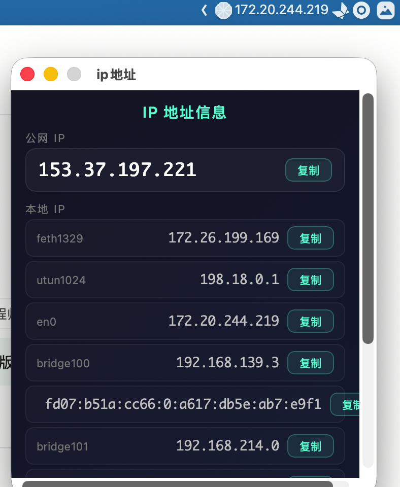
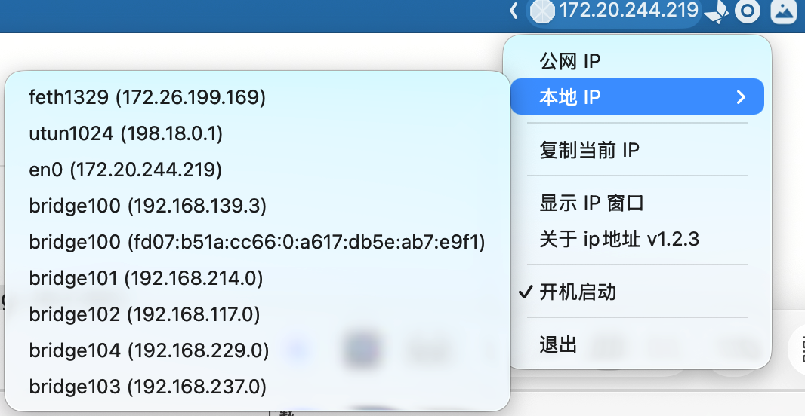

公网 IP，一眼可见
启动时向 ipify 取回公网地址，直接写在菜单栏标题或浮窗上。IPv4 优先，网络支持时同时给出 IPv6。
api64.ipify.org
常驻 macOS 菜单栏与 Windows 通知区域的小工具。公网地址一眼可见，本地网卡一键复制，左键刷新、开机自启。Tauri 2 + Rust 打成通用二进制，不装运行时，也不占 Dock。
不追求功能完整，只把「查 IP」这一件事做到不用切窗口、不用打开网页、不用记命令。
启动时向 ipify 取回公网地址，直接写在菜单栏标题或浮窗上。IPv4 优先，网络支持时同时给出 IPv6。
枚举 en0、utun、bridge 等接口，物理网卡与虚拟网卡分开认，IPv4 / IPv6 各占一行，不再靠 ifconfig 翻。
公网与本地每一行都带独立的「复制」按钮，拷进终端、工单、聊天框都不用重新选中，也不会复制错行。
macOS 以 Accessory 模式运行：没有 Dock 图标、没有常驻主窗口，菜单栏里只留一行 IP。
通知区域不支持在图标旁显示文字，于是改用右下角小窗：可拖动、点击复制、点「×」收起，左键托盘图标随时唤回。
左键点托盘图标立即重查公网 IP，不等缓存；托盘菜单勾选「开机启动」后随登录静默驻留。
菜单栏只负责「瞥一眼」，托盘菜单负责「动手」，主窗口才是完整的地址清单。


安装包已经内置全部依赖，机器上不需要 Rust、Node 或 WebView 运行时。
IPMenuBar_1.2.5_macos-universal.dmg，Intel 与 Apple Silicon 共用这一个包。
双击打开镜像，把 IPMenuBar 图标拖到 Applications 文件夹。
未签名版本会被 Gatekeeper 拦一次：右键图标选「打开」，或到 系统设置 → 隐私与安全性 点「仍要打开」。
启动后没有 Dock 图标，菜单栏右侧出现 IP；点托盘图标可打开窗口或退出。
IPMenuBar_1.2.5_windows-x64-setup.exe，单文件、免管理员；域内分发可改用同名 .msi。
按向导下一步即可，默认安装到当前用户目录，不请求管理员权限。
未做代码签名会提示「Windows 已保护你的电脑」：点「更多信息 → 仍要运行」。
托盘区出现图标，屏幕右下角常驻小窗显示 IP；点「×」收起，左键托盘图标唤回。
三个安装包都放在本站 downloads/ 目录下，同源直链，不经过第三方 CDN。每个文件附完整 SHA256，可下载后自校验。
一个 dmg 同时支持 Apple Silicon 与 Intel，安装后以菜单栏应用运行。
8bc422312f144838d7314fc78e8eb40d0739cf3e614c3fadf449130f463183fa
单文件安装器，免管理员权限，适合个人电脑直接双击安装。
2ede7d84fc6145977353e1424d557e5b325df64563783d865ade200fa662969c
标准 MSI 包，适合域内批量分发与软件清单统一管理。
f23a1227e7ac034d60873d6f1ed3c6ea14b30668f68a80586a9ebbcc79ef6574
安装、网络与数据相关的六件事，一次说清。
api64.ipify.org 换取你自己的公网地址，不登录、不统计、不上报。本地网卡地址完全在本机枚举，不产生任何网络请求。TrayIcon::set_title，无法像 macOS 菜单栏那样在图旁挂一段文字。因此 Windows 端改用右下角常驻浮窗展示 IP：可拖动、点击复制、点「×」收起，左键托盘图标唤回。下载 8 MB，装好就能用。没有账号、没有订阅、没有后台服务。
v1.2.5 · 2026-11-19 · MIT License